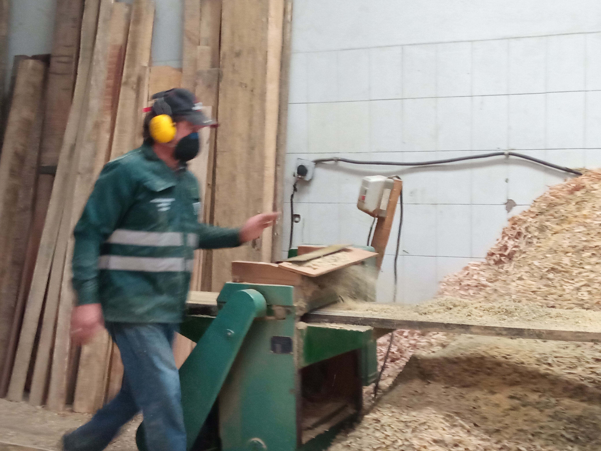
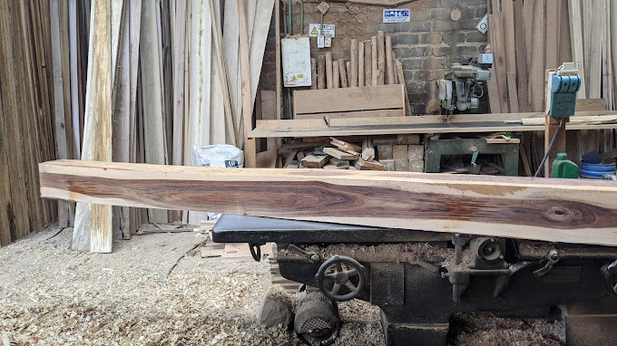

Quiénes Somos
En Maderas Los Puentes, nos especializamos en la venta y corte de madera de alta calidad para la construcción, carpintería y acabados. Contamos con más de 32 años de experiencia ofreciendo productos confiables, resistentes y sustentables, adaptados a las necesidades de cada proyecto. Trabajamos con los mejores proveedores para garantizar maderas secas, bien tratadas y listas para su uso, ya sea en construcción, fabricación de muebles o decoración.

